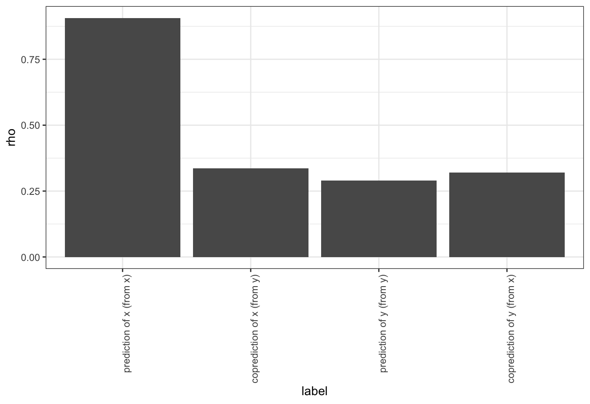

vignettes/rEDM-coprediction.Rmd
rEDM-coprediction.RmdThe goal of co-prediction is to quantify dynamic similarity between two time series. Given two time series, \(x\) and \(y\), we assume that the dynamics can be represented as: \[ x_{t+tp} = F\left(\mathbf{x}_t\right) = F\left( x_t, x_{t-\tau}, \dots, x_{t-(E-1)\tau} \right)\] and \[ y_{t+tp} = G\left(\mathbf{y}_t\right) = G\left( y_t, y_{t-\tau}, \dots, y_{t-(E-1)\tau} \right)\] .
Then co-prediction is a way to quantify how closely \(F\) and \(G\) resemble each other.
We can accomplish this task using rEDM by constructing concatenated time series and applying simplex or s-map to make predictions with appropriately defined libs and preds.
First, we grab some demo time series from the block_3sp data.frame:
Concatenate the time series and record which portions correspond to x and y:
Use simplex to identify the optimal embedding dimension for x and use it to co-predict from x to y:
simplex_out_x <- simplex(concatenated_xy, lib = lib_x, pred = lib_x, silent = TRUE)
best_E_x <- simplex_out_x$E[which.max(simplex_out_x$rho)]
copred_x_to_y <- simplex(concatenated_xy, lib = lib_x, pred = lib_y, E = best_E_x)and in the reverse direction:
We can interpret the strength of dynamic similarity in comparison to the univariate predictability of x and y.
First, merge the output into a single data.frame:
groups <- c("prediction of x (from x)",
"coprediction of x (from y)",
"prediction of y (from y)",
"coprediction of y (from x)")
to_plot <- data.frame(label = factor(groups, levels = groups),
rbind(simplex_out_x[which.max(simplex_out_x$rho), ],
copred_y_to_x,
simplex_out_y[which.max(simplex_out_y$rho), ],
copred_x_to_y)
)Plot the output
library(ggplot2)
ggplot(to_plot, aes(x = label, y = rho)) +
geom_col() + theme_bw() +
theme(axis.text.x = element_text(angle = 90, hjust = 1))
Here, we see that the predictions of \(x\) are worse when we try to use the inferred dynamics from \(y\) (i.e. \(G\)) to make forecasts. In contrast, the predictions of \(y\) have roughly the same forecast skill. Since the time series come from a model simulation where \(x\) and \(y\) have different coefficients, we can infer their dynamical maps are actually different.
Thus, our results seem to show that the reconstructed map of \(G\) (inferred from the 100-point time-series of \(y\)) is a subset of \(F\) (inferred from the 100-point time series of \(x\)). One possibility is that the dynamics of \(y\) are complex, such that more data is needed to recover the true dynamics (i.e. the true \(G\) is more complex than our inferred \(\hat{G}\) from the data) – thus, with only 100 data points the inferred \(\hat{F}\) is equally good at predicting \(y\).
Alternatively, the dynamics of \(y\) are the same as \(x\), but the time series is observed with more noise, such that forecast skill is lower. (This also explains why we get roughly the same forecast skill when trying to predict \(x\) using \(\hat{G}\).) Using longer samples of the time series could potentially answer this question.